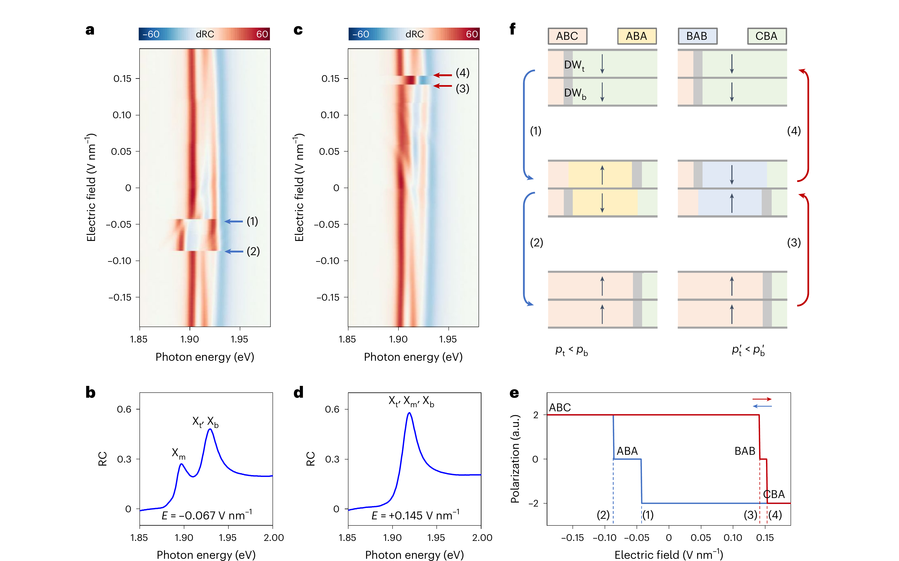
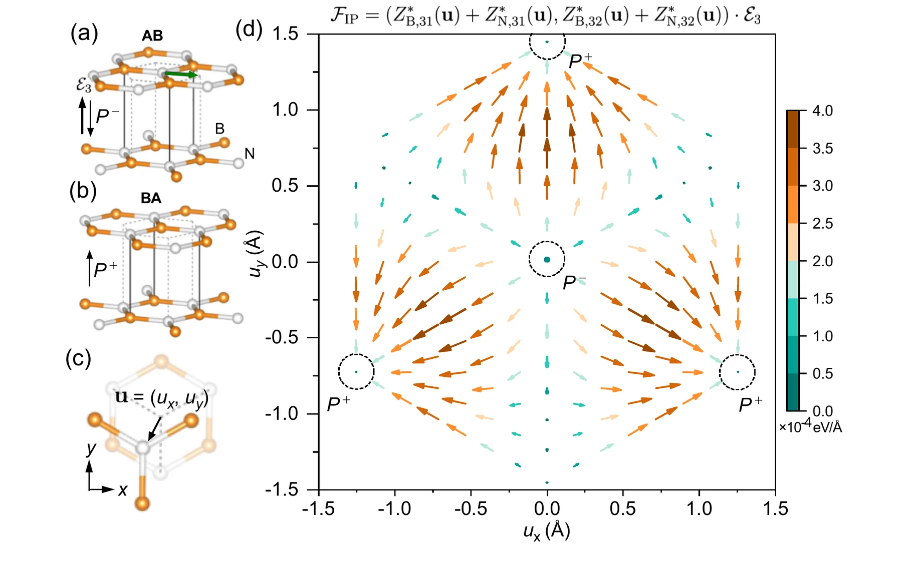
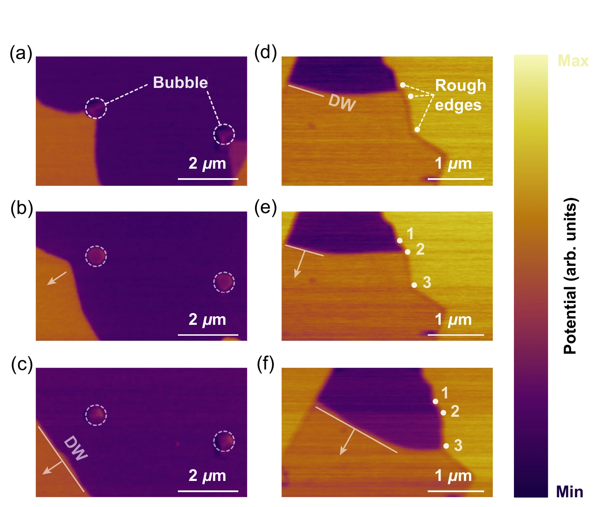
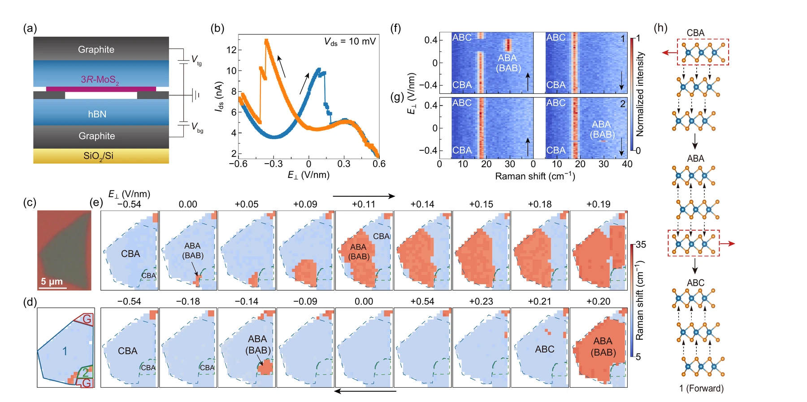

2025–2026 已经把滑移铁电畴壁故事推进到哪一步？
最后一章不再增加一套新理论。我们把前七章重新压回最新 3R-MoS₂ / h-BN 工作，只问一个更严格的问题：哪些结果已经是直接证据，哪些只是很有说服力的机制解释，哪些关键可观测量还没测，所以暂时不能叫普适性？
本章只使用项目 Drive 中的 2025–2026 主线论文，并复用前面模块已经冻结的原论文图；没有重复裁图，也没有把旧段落截图当原文。下面所有论文原文仍是可选择 HTML 真文本。
1 · 先给结论：机制证据已经很强，普适性证据还没闭合
| 工作 | 畴壁主导 | 钉扎 / 路径差异 | 直接空间成像 | v(E) | ζ / B(r) | β / ν + FSS |
|---|---|---|---|---|---|---|
| Liang 2025 3R-MoS₂ 三层 | ✓ | ✓ 不同界面钉扎中心 + 掺杂 | 光学堆垛图 | — | — | — |
| Wang & Dong 2025 h-BN 理论/AIMD | 机制指向畴壁 / 对称性破缺 | 讨论外在对称性破缺 | 理论 | 无序为零时的 v(E) | — | — |
| Ke et al. 2025 h-BN 理论/MD | ✓ 只有畴壁附近受横向力 | 重点是洁净 / 超润滑畴壁 | MD 空间轨迹 | 速度–场动力学，但不是淬火无序退钉扎标度 | — | — |
| Chen et al. 2026 3R-MoS₂ PRX | ✓ | ✓ 封闭小畴 / 粗糙边缘的钉扎–退钉扎 | ✓ KPFM | 未给连续恒场 v(E) 临界曲线 | — | — |
| Liu et al. 2026 3R-MoS₂ PRL | ✓ | ✓ 停留时间 / 表观临界场变化 | ✓ 器件尺度拉曼图 | — | — | — |
| Baek et al. FC（完全公度）单畴 3R-TMD | 无畴壁翻转：提醒“畴壁必要性”有结构条件 | 与多畴畴壁 / AA 钉扎作直接结构对照 | ✓ DF-TEM / HAADF-STEM 结构验证 | 未给淬火无序畴壁 v(E) | — | — |
| Dai et al. 2026 三层 γ-InSe 理论/MLMD | ✓ 耦合多个畴壁 | 畴壁间相互作用 / 分阶段路径，不是淬火钉扎主线 | 原子级模拟轨迹 | 位移–时间 / 速度动力学，但不是临界退钉扎曲线 | — | — |
Baek 边界
完全公度单畴 3R-TMD 可以在无预存畴壁 / AA 网络的结构里保持铁电翻转；这把 Chen 的 ““无畴壁，不反转”” 从口号改写成需要注明样品结构与条件的机制命题。
Dai 边界
三层 γ-InSe 的多个滑移界面产生位于不同位置畴壁、非极性中间畴与畴壁间相互作用；单一 u(y) 因此应被理解为最小模型，而不是多层的自动粗粒化。
2 · Liang 2025：路径开始变成一个对无序敏感的可观测量
三层的价值在于，相同净极化可以对应不同堆垛；因此翻转路径本身就能记录“哪一层界面的畴壁先被释放”。这把钉扎从一句解释推进成可以通过中间堆垛态反推的实验变量。
We find that the switching pathway is influenced not only by the competition among pinning centres—which localize domain walls at different interfaces—but also by a free-carrier screening effect linked to chemical doping.
Liang 的核心结论是：三层 3R-MoS₂ 的翻转路径不是唯一由能量最低的堆垛路线决定。不同界面的畴壁被不同钉扎中心困住，自由载流子屏蔽又会改变局域条件，因此每次循环中先释放哪一堵畴壁、经过 ABA 还是 BAB 中间态，都可能不同。

这里应该把路径当成钉扎景观的读出量，而不是把每次不同路径简单归为“实验噪声”。
3 · Wang & Dong → Ke 2025：解释了“谁受力”，但不要把雪崩 / 超润滑当成退钉扎结论
这两篇把机制问题推进得很远：基态畴内的 C₃ 对称性让面外电场不能直接选定横向滑移；畴壁提供对称性破缺，并通过非对角 Born 有效电荷产生面内力。这个结果解释“为什么现实翻转很自然地落到畴壁运动”。
The largest required critical electric field is not an intrinsic constant, but determined by the initial sliding conditions, which can be affected by extrinsic factors that break the initial C3 symmetry.
Wang 与 Dong 强调，所需临界电场并不是材料固定不变的“本征常数”。初始滑移条件以及破坏初始 C₃ 对称性的外部因素会显著改变它。这支持把实验中的开关场看成受局域初态和对称性破缺影响的量，而不是直接当作统一的本征阈值。
Importantly, only atoms at the DWs, which break the C3 symmetry, possess nonzero off-diagonal BEC elements, enabling the generation of net in-plane forces that drive DW motion.
Ke 等把面外电场如何驱动面内畴壁运动说得很直接：只有畴壁附近因为 C₃ 对称性被破坏而出现非零的非对角 Born 有效电荷，从而产生净面内力。它说明“真正受力的自由度”可以集中在畴壁，而不是整片均匀畴。

最重要的视觉信息是基态畴与对称性破缺构型的力差值；它给出畴壁驱动的微观来源，而不是无序指数。
4 · Chen 2026：已经真实看到钉扎 → 退钉扎，但还不是临界标度实验
这一步很关键。KPFM 里畴壁碰到封闭小畴后弯曲、提高电压后越过封闭小畴，粗糙边缘上也出现重复钉扎/退钉扎；同时单畴区域的偏置测试没有产生新的反极化畴。对“预存畴壁控制翻转”而言，这是很强的空间证据。
This domain-nucleation-free property in sliding ferroelectrics allows the control of polarization switching to shift entirely to DW motion, thereby defining a new paradigm, “no domain wall, no polarization reversal.”
The involvement of pinning sites enables the coexistence of both deterministic and stochastic behaviors.
Chen 等把机制推进到很强的表述：在他们研究的滑移铁电体系里，翻转可以在不重新成核的情况下由已有畴壁运动完成；钉扎点又同时带来确定性和随机性。但这仍然是特定结构和样品条件下的机制结论，不能自动推广成所有滑移铁电体系的普遍定律。

这是本站目前最接近“真实滑移铁电缺陷景观上的畴壁退钉扎”那一步的实验图，但它测的是离散偏置后的空间状态，不是完整 v(E) 临界动力学。
5 · Liu 2026：器件尺度空间图已经告诉我们“单一 E_c”不够
Raman（拉曼）成像把器件分成机械分割区域；不同区域独立翻转，中间态寿命不同，而且同一区域不同循环的表观临界场也可变化。这比只看一条电输运滞回强很多，因为空间图明确告诉你：不同区域面对的是不同局域景观。
The dwell time of intermediate states varies widely, indicating that pinning sites strongly influence the dynamics.
Such variations in the apparent critical field were frequently observed, indicating that microscopic details of the switching can vary between cycles due to pinning by defects.
Liu 等用剪切模拉曼成像看到中间态停留时间和表观临界场在不同循环间显著变化，并把这种变化与缺陷钉扎联系起来。它直接说明器件不能只用一个全局 E_c 概括；局域区域、等待时间和循环历史本身就是需要统计的物理量。

这张图最适合训练一个判断：分步 / 区域依赖翻转是对无序敏感的动力学的证据，但本身还没有给出普适类。
6 · 真正缺的不是“再来一篇钉扎论文”，而是同一套标度可观测量
① 恒场 v(E)
固定一堵预存畴壁，在一组恒定 E 下直接追踪畴壁位置 x(t)，区分瞬态与稳态速度；先定义 Ec，再谈 v∼(E−Ec)β。
② 几何: B(r) / S(q)
同一批畴壁轨迹同时测粗糙度。若畴壁有悬垂 / 封闭小畴，必须说明提取规则；不能只给一张“很毛”的 KPFM/Raman 图。
③ 关联长度 + 有限尺寸
临界附近 ξ 应增长。至少多个横向尺寸 L，测试 Ec(L)、速度坍缩或粗糙度截止；单尺寸幂律不构成普适性。
④ 无序定义
实验要尽量表征缺陷类型 / 关联长度；模拟要固定连续体无序强度，做 dx、dt、L 与随机种子收敛。否则指数差异可能只是数值离散化差异。
[畴壁 / 钉扎 / 阈值 / 几何 / 标度] 中哪些环节？哪些只被作者解释、没有独立可观测量支撑？有没有把洁净迁移率、蠕变、钉扎事件与临界退钉扎混成一个词？”